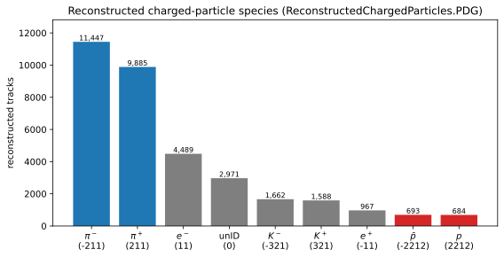

All in One View
Content from Generative AI as an agentic research tool
Last updated on 2026-09-30 | Edit this page
Overview
Questions
- How does an agentic assistant differ from a chat model?
- What are the parts of an LLM “harness”?
- What loops sit around the agent loop, and what does each add?
- How do we get trustworthy results from a stochastic model?
- Why build on an open protocol, not one product?
Objectives
- Trace one pass of the agent loop for a physics task, naming what enters the context at each step.
- Draft acceptance criteria precise enough that a grader — human or agent — can apply them.
- Place a given automation (a format-on-edit hook, a nightly report, a prompt tweak) at the right loop level.
- Choose between a tool, a skill, and a subagent when adding a new capability.
The bottleneck is rarely the physics
In a typical analysis the physics steps are few: select a final state, build an observable, fit a signal. Most of the time goes into the software around them: finding datasets, learning the data model, getting branch names and units right, and iterating on plotting and analysis code. LLMs can reduce this work, but only if their results can be checked. Later episodes apply this to the decay \(\Lambda^0 \to p\,\pi^-\).
Two modes of use
A chat completion is a single request: a prompt goes in, text comes out. If the text is code, you run it, read the error, and paste it back by hand. The model never observes your data or the result of running anything.
An agentic loop runs the same model inside a control structure that lets it act. The model proposes an action, an external tool carries it out, the result is added to the context, and the model is called again, until a stopping condition is met. The model then works from the actual state of your files and the output of real computations, not only from its training.
Scope
Here, “generative AI” means an LLM-based coding assistant used in this agentic mode. Machine learning for reconstruction or particle identification is not covered. The subject is writing and running analyses.
This loop is the first of four. Each one wraps the one before it, and this episode goes through them in order.
Level 1 — the agent loop
The basic cycle: the model calls a tool, looks at what came back, and decides whether it is done.
%%{init: {'theme':'base', 'themeVariables': {'fontSize':'15px','lineColor':'#94a3b8','edgeLabelBackground':'#e2e8f0','clusterBkg':'#1f293720','clusterBorder':'#94a3b8','titleColor':'#94a3b8'}}}%%
flowchart TD
accTitle: {Level 1 the agent loop}
accDescr: {Level 1 the agent loop}
Q["task"]:::user --> M["model"]:::core
M -->|"tool call"| T["tools<br/>read files · run code · query "]:::tool
T -->|"result appended to context"| D{"task<br/>complete?"}:::core
D -->|"no"| M
D -->|"yes"| R["result + provenance"]:::out
classDef core fill:#e7efff,stroke:#4c6ef5,stroke-width:1.5px,color:#10204a;
classDef tool fill:#e6f7ed,stroke:#2f9e44,stroke-width:1.5px,color:#0b3d1f;
classDef out fill:#f3e8ff,stroke:#7048e8,stroke-width:1.5px,color:#2e1065;
classDef user fill:#f1f3f5,stroke:#868e96,stroke-width:1.5px,color:#212529;The model together with the software that runs this cycle is called a harness. It has four parts:
- Model: reasoning and code generation. The provider and model can be swapped; they are not part of the method.
- Context: everything the model sees in a step: instructions, files, earlier turns, tool outputs. Its size is limited (the context window).
- Tools: operations the model may call. Tools are the only way the model can change anything outside itself.
- Control loop: repeats propose → execute → observe until the task is done. This is what separates an agent from a chatbot.
Extending the harness
Current assistants add a few standard extension points to this core.
%%{init: {'theme':'base', 'themeVariables': {'fontSize':'15px','lineColor':'#94a3b8','edgeLabelBackground':'#e2e8f0','clusterBkg':'#1f293720','clusterBorder':'#94a3b8','titleColor':'#94a3b8'}}}%%
flowchart TB
accTitle: {AI agent harness}
accDescr: {AI agent harness}
MCP["MCP servers<br/>external tools & data"]:::tool --> H
SUB["subagents<br/>specialized, isolated context"]:::tool --> H
HOOKS["hooks<br/>lifecycle automation"]:::tool --> H
MON["monitors<br/>watch & react"]:::tool --> H
H(["harness core<br/>model + context + tools + loop"]):::core
classDef core fill:#e7efff,stroke:#4c6ef5,stroke-width:1.5px,color:#10204a;
classDef tool fill:#e6f7ed,stroke:#2f9e44,stroke-width:1.5px,color:#0b3d1f;MCP servers: tools in a standard form that works with any assistant. This is how the assistant gets physics tools (Episode 3).
Subagents: separate assistants started for a sub-task, so a large task can be split up.
Skills: versioned procedures (a
SKILL.mdplus scripts) loaded when a request matches (Episode 4). A tool is a capability; a skill is a recipe.Hooks: scripts the harness runs at fixed moments, e.g. reformat code after every edit or log each tool call.
Monitors: watch background work, e.g. a long batch job, and call the assistant again when it finishes.
Level 2 — the verification loop
A level-1 agent stops when it decides the task is complete. An LLM is stochastic: the same prompt can give different outputs, and a confident answer is not evidence of a correct one. A second loop around the first handles this. A grader checks the agent’s result against explicit acceptance criteria, and a failure goes back to the agent as feedback for another attempt.
%%{init: {'theme':'base', 'themeVariables': {'fontSize':'15px','lineColor':'#94a3b8','edgeLabelBackground':'#e2e8f0','clusterBkg':'#1f293720','clusterBorder':'#94a3b8','titleColor':'#94a3b8'}}}%%
flowchart TD
accTitle: {Level 2 the verification loop}
accDescr: {Level 2 the verification loop}
A["agent loop ①"]:::core -->|"draft result"| G["grader<br/>explicit success criteria"]:::tool
G --> P{"pass?"}:::core
P -->|"no — feedback into context"| A
P -->|"yes"| R["accepted result"]:::out
classDef core fill:#e7efff,stroke:#4c6ef5,stroke-width:1.5px,color:#10204a;
classDef tool fill:#e6f7ed,stroke:#2f9e44,stroke-width:1.5px,color:#0b3d1f;
classDef out fill:#f3e8ff,stroke:#7048e8,stroke-width:1.5px,color:#2e1065;Treat every model output as a hypothesis and accept it only after checking it against something external: the data, a fit statistic, a known physical value, or an independent implementation. For the \(\Lambda^0\) measurement the criteria are physical and checkable: \(|\mu - 1.115683\,\mathrm{GeV}| < 5\,\mathrm{MeV}\), \(\sigma\) consistent with detector resolution, \(\chi^2/\mathrm{ndf}\) of order 1. In Episode 4 you write this grader into the lambda-fit skill’s success criteria. An agent that passes reports the numbers; one that fails must report the failure instead of a result.
Grading costs time and tokens, but in physics analysis correctness matters more than speed. Prefer tools that return small quantities you can inspect (counts, bin edges, fit parameters), and keep a record of what was run.
Level 3 — the operation loop
With verification in place, the agent no longer needs you to start it. In a third loop an event (a schedule, a finished production job, a new pull request) starts the agent, its verified output updates something (a report, a documentation page, an alert), and the system goes back to waiting.
%%{init: {'theme':'base', 'themeVariables': {'fontSize':'15px','lineColor':'#94a3b8','edgeLabelBackground':'#e2e8f0','clusterBkg':'#1f293720','clusterBorder':'#94a3b8','titleColor':'#94a3b8'}}}%%
flowchart LR
accTitle: {Level 3 the operation loop}
accDescr: {Level 3 the operation loop}
E["event<br/>schedule · finished job · new PR"]:::pkg --> A["agent + verification<br/>① + ②"]:::core
A --> U["system update<br/>report · doc page · alert"]:::out
U -.->|"wait for the next event"| E
classDef core fill:#e7efff,stroke:#4c6ef5,stroke-width:1.5px,color:#10204a;
classDef out fill:#f3e8ff,stroke:#7048e8,stroke-width:1.5px,color:#2e1065;
classDef pkg fill:#fff4e0,stroke:#f08c00,stroke-width:1.5px,color:#5c3b00;Episode 6 shows collaboration examples: documentation regenerated on a schedule, and reviews triggered per pull request.
Level 4 — the improvement loop
The last loop goes around everything. From time to time, look at what
the agent actually did (transcripts, failed fits, wrong tool choices)
and change the harness accordingly: clarify
AGENTS.md, tighten a skill’s success criteria, add a
missing tool. You do a small version of this whenever a prompt goes
wrong and you fix the instructions instead of retyping the request.
Where a human belongs in each loop
Each level has a point where a person should decide: approving a sensitive tool call (1), signing off a graded result (2), reviewing what runs unattended (3), and choosing which harness changes to keep (4).
The next episode describes the physics measurement.
- An agentic assistant runs tools and reads their output; a chat model only returns text.
- Treat every result as a hypothesis and check it against clear criteria before you accept it.
The four-level loop schematics are adapted from The Art of Loop Engineering.
Content from The measurement: Λ⁰ → p π⁻
Last updated on 2026-09-30 | Edit this page
Overview
Questions
- What is the p π⁻ invariant-mass observable, and its peak and background?
- Which EDM4eic collections and units does it need?
Objectives
- Compute m(p, π) by hand from the four momentum branches and the PDG masses.
- Sketch the expected spectrum (peak position, width scale, background shape) before looking at data.
The Setup page covers the servers and the assistant. This episode describes the physics you reconstruct starting in Episode 3.
The decay
The Λ⁰ is the lightest strange baryon (uds, spin-parity ½⁺). It decays only weakly (a strangeness-changing ΔS = 1 transition), so it is long-lived: cτ ≈ 7.9 cm. Its dominant hadronic mode is
Λ⁰ → p + π⁻ (branching fraction ≈ 63.9%)The centimeter-scale flight distance makes the decay a V0: two oppositely charged tracks from a vertex displaced from the primary interaction point.
%%{init: {'theme':'base', 'themeVariables': {'fontSize':'15px','lineColor':'#94a3b8','edgeLabelBackground':'#e2e8f0','clusterBkg':'#1f293720','clusterBorder':'#94a3b8','titleColor':'#94a3b8'}}}%%
flowchart LR
accTitle: {Lambda to proton pion V0 decay}
accDescr: {Lambda to proton pion V0 decay}
PV["primary vertex<br/>e + A collision"]:::vtx -. "Λ⁰: neutral, cτ ≈ 7.9 cm" .-> DV["displaced<br/>decay vertex"]:::vtx
DV --> P["proton<br/>PDG 2212"]:::pos
DV --> PI["pion<br/>PDG -211"]:::neg
classDef vtx fill:#e7efff,stroke:#4c6ef5,stroke-width:1.5px,color:#10204a;
classDef pos fill:#ffe3e3,stroke:#e03131,stroke-width:1.5px,color:#5c0a0a;
classDef neg fill:#e7f5ff,stroke:#1971c2,stroke-width:1.5px,color:#0a3d62;The observable
The Λ⁰ is neutral and not detected directly; we reconstruct it from its charged daughters. For a candidate proton \(p_1 = (E_1, \vec{p}_1)\) and candidate pion \(p_2 = (E_2, \vec{p}_2)\), the pair’s invariant mass is Lorentz invariant:
\[E_i = \sqrt{|\vec{p}_i|^2 + m_i^2}\]
with \(m_i\) the assigned proton or pion mass, and
\[m(p, \pi) = \sqrt{(E_1 + E_2)^2 - |\vec{p}_1 + \vec{p}_2|^2}\]
Assign the proton mass to one track and the pion mass to the other (using reconstructed particle ID). For true Λ⁰ decays this equals the parent mass; candidates accumulate in a peak at 1.115683 GeV.
Width: resolution, not lifetime
The Λ⁰ natural width (\(\Gamma = \hbar/\tau \approx 2.5 \times 10^{-6}\) eV) is far below any detector effect. The observed peak width, a few MeV, measures the detector momentum and angular resolution, not the particle.
Background
Most proton–pion pairs do not come from a Λ⁰ at all. These random (“combinatorial”) pairs do not peak; they form a smooth distribution under the signal. The analysis extracts a yield by fitting a Gaussian peak on top of a low-order polynomial background (Episode 5). The charge-conjugate mode Λ̄ → p̄ π⁺ is reconstructed identically with the antiparticles.
Reference values (PDG)
| Quantity | Value |
|---|---|
| m(Λ⁰) | 1.115683 GeV |
| m(p) | 0.9382720813 GeV |
| m(π±) | 0.13957061 GeV |
| cτ(Λ⁰) | 7.89 cm |
| BR(Λ⁰ → p π⁻) | 63.9 % |
Energies and momenta are in GeV (natural units, c = 1).
The data model
ePIC reconstruction output uses EDM4eic, an EIC
extension of EDM4hep generated with PODIO.
A file contains an events tree; each entry is one event,
each branch a collection. We need one collection, the
reconstructed charged tracks, and four members:
events (tree; one entry per event)
ReconstructedChargedParticles.PDG reconstructed particle-ID hypothesis
ReconstructedChargedParticles.momentum.x p_x [GeV]
ReconstructedChargedParticles.momentum.y p_y [GeV]
ReconstructedChargedParticles.momentum.z p_z [GeV]PDG is the Particle Data Group code the reconstruction
assigns each track. Select protons (2212) and π⁻
(-211) for Λ⁰, antiprotons (-2212) and π⁺
(211) for Λ̄.
You do not download a file. In Episode
3 the assistant uses the rucio
tools to find a DIS dataset and xrootd
to verify its files, then reads one of the dataset’s
root:// URLs
(e.g. root://epicxrd1.sdcc.bnl.gov:1095//...) in
place with the uproot
tools. It reads these branches without you writing any I/O code.
- The Λ⁰ shows up as a peak at 1.1157 GeV in the proton–pion invariant mass.
- The peak width comes from detector resolution.
Content from Tool servers and the Model Context Protocol (MCP)
Last updated on 2026-09-30 | Edit this page
Overview
Questions
- What is MCP, and what problem does it solve?
- What can the EIC tool servers do?
- How do you connect an assistant to them?
Objectives
- Start the servers, check them, and read a server log when something
fails
(
eic-mcp up/status/logs). - Generate the connection file for your own client with
eic-mcp config. - Discover a real DIS dataset by prompting, without hard-coding names or paths.
- Judge which returned quantities are worth verifying, and against what.
One interface for tools
Tools are the only way an assistant can act (Episode 1). The Model Context Protocol (MCP) defines a standard interface for them: write a tool once as a server, and any client (assistant) that supports MCP can use it.
The lesson’s servers run inside eic-shell, and the assistant talks to them over a local web address.
%%{init: {'theme':'base', 'themeVariables': {'fontSize':'15px','lineColor':'#94a3b8','edgeLabelBackground':'#e2e8f0','clusterBkg':'#1f293720','clusterBorder':'#94a3b8','titleColor':'#94a3b8'}}}%%
flowchart LR
accTitle: {EIC MCP data tools}
accDescr: {EIC MCP data tools}
A["AI assistant<br/>opencode · Copilot · Cursor"]:::core <-->|"MCP"| S["uproot tool server<br/>(MCP, in eic-shell)"]:::tool
S <-->|"uproot"| F["EDM4eic ROOT file"]:::data
classDef core fill:#e7efff,stroke:#4c6ef5,stroke-width:1.5px,color:#10204a;
classDef tool fill:#e6f7ed,stroke:#2f9e44,stroke-width:1.5px,color:#0b3d1f;
classDef data fill:#fff4e0,stroke:#f08c00,stroke-width:1.5px,color:#5c3b00;The uproot tool server
The ePIC uproot tool server reads ROOT/EDM4eic files with uproot. It can list a file’s contents, compute statistics and histograms, and run short NumPy calculations over one file or a whole dataset. It returns small summaries (counts, bin edges, statistics) that you can check, not raw data. The calculations run in a sandbox that cannot install software or write files.
Start the servers
Start the servers inside eic-shell (see Setup):
This starts the uproot, xrootd, and rucio servers.
eic-mcp status shows which are running, and
eic-mcp logs uproot shows a server’s log.
If rucio answers but xrootd/uproot time out
If dataset queries work but file access hangs, the XRootD store may
be down; check with
xrdfs root://epicxrd1.sdcc.bnl.gov:1095 ls /eic/EPIC/RECO.
The default store (BNL) has campaigns from 25.12.0. For older ones
(up to 25.10.x) use JLab:
XROOTD_SERVER=root://dtn2304.jlab.org:8443 XROOTD_BASE_DIR=/jlab-osdf-ro/eic/EPIC/volatile eic-mcp restart.
If every uproot call times out after one large call, the server is
busy, not broken: it handles one request at a time. Wait, or run
EIC_MCP_SERVERS=uproot eic-mcp restart.
Connect the assistant
Write opencode’s config file in the directory where you start opencode, then start it:
In the session, /mcp lists the connected servers and
their tools.
Other clients use the same URLs: eic-mcp config claude
(or copilot, vscode, cursor,
gemini, codex) writes the file where that
client reads it.
Finding the data with MCP
You do not download a dataset. The other two MCP servers let the
assistant find and verify the files, in place of running
rucio and xrdfs by hand, and
uproot-mcp then reads them directly from the store.
%%{init: {'theme':'base', 'themeVariables': {'fontSize':'15px','lineColor':'#94a3b8','edgeLabelBackground':'#e2e8f0','clusterBkg':'#1f293720','clusterBorder':'#94a3b8','titleColor':'#94a3b8'}}}%%
flowchart LR
accTitle: {EIC MCP data tools}
accDescr: {EIC MCP data tools}
R["rucio-mcp<br/>find the dataset"]:::tool -->|"file locations"| X["xrootd-mcp<br/>check the files"]:::tool
X -->|"checked files"| U["uproot-mcp<br/>analyze in place"]:::core
classDef tool fill:#e6f7ed,stroke:#2f9e44,stroke-width:1.5px,color:#0b3d1f;
classDef core fill:#e7efff,stroke:#4c6ef5,stroke-width:1.5px,color:#10204a;-
rucio-mcpsearches the data catalog: it finds a dataset by name, lists its files, and gives theirroot://locations. -
xrootd-mcpbrowses the data store and checks that the files exist.
uproot-mcp then reads a root:// file
in place.
List the available campaigns
ePIC data is organized by production campaign, a
version such as 26.06.0. The campaign, the beam/target, and
the physics process are all part of the rucio DID
(e.g. epic:/RECO/26.06.0/epic_craterlake/DIS/pythia8.316-1.0/NC/noRad/ep/18x275/...).
Before locating a specific dataset, check which campaigns exist so you
use a current one:
Using the rucio tools, find which production campaigns are available (the version field in the DIDs, e.g. 26.06.0) and show the most recent few.Watch how the assistant does this: the catalog holds thousands of datasets in no particular order, so looking at only the first page of results can miss the newest campaigns.
Exercise: locate a dataset (≈ 10 min)
Ask your assistant:
Use the rucio tools to find the ePIC reconstructed-DIS dataset for the BeAGLE eCu ep 10x115 GeV sample in campaign 26.04.1, list its files, then use the xrootd tools to confirm those files exist on the store and report the total number of events.The assistant finds the dataset with rucio (374 files), gets their
root:// locations, and checks them with xrootd. rucio does
not store event counts, and reading all 374 files would take an hour, so
a good answer checks a few files (≈ 1,220 events each) and
extrapolates.
Inspect the dataset
You describe what you want in plain language and the assistant makes
the tool calls. Take one of the root:// URLs from the
previous exercise (written below as
root://epicxrd1.sdcc.bnl.gov:1095//…) and analyze it in
place.
Exercise: enumerate the schema (≈ 10 min)
Issue the request:
Using the uproot tools, report the structure of the events tree in root://epicxrd1.sdcc.bnl.gov:1095//<your-discovered-file>.root and list the members of the ReconstructedChargedParticles collection.The assistant reads the structure of the events tree and
reports something like:
OUTPUT
File: root://epicxrd1.sdcc.bnl.gov:1095//…/<dataset-file>.root
Tree: events — branches grouped by collection
ReconstructedChargedParticles collection:
ReconstructedChargedParticles.PDG int32[] PDG particle-ID code
ReconstructedChargedParticles.momentum.x float[] p_x [GeV]
ReconstructedChargedParticles.momentum.y float[] p_y [GeV]
ReconstructedChargedParticles.momentum.z float[] p_z [GeV]
… energy, charge, mass, type, referencePoint.*, covMatrix.*The names are read from the file, not guessed, so the assistant cannot invent branch names.
Exercise: identify the species present (≈ 10 min)
Issue the request:
Histogram ReconstructedChargedParticles.PDG with one bin per integer code, so I can see the reconstructed particle species in the file.The assistant makes a histogram with one bin per PDG code. A reconstructed-DIS file gives, for example:
OUTPUT
PDG species count
-211 pi- 11447
211 pi+ 9885
11 e- 4489
0 unID 2971 <- tracks with no PID hypothesis
-321 K- 1662
321 K+ 1588
-11 e+ 967
-2212 pbar 693
2212 p 684 <- protons are rare
Pions dominate; protons are rare (≈ 2%), so the Λ⁰ signal will be small. A sizeable fraction of tracks have no PID (code 0) or a wrong one. This misidentification adds to the combinatorial background, which is why we fit the peak instead of counting it.
Verify the returned quantities
Look at the returned numbers (bin edges, counts, statistics). Do the PDG peaks fall at physical codes, and are the proton and pion yields plausible? Episode 4 turns this into explicit success criteria.
The same Λ⁰ peak can be obtained without MCP, with ROOT RDataFrame,
TTreeReader, plain uproot, or the PODIO Frame API; scripts are in extras/.
The assistant can now query the data through tools whose output you can check. The next episode writes this procedure down as a reusable, versioned skill.
- MCP servers give an assistant tools; any MCP assistant can use them.
-
eic-mcp upstarts the servers in eic-shell andeic-mcp config opencodeconnects opencode.
Content from Persisting instructions: AGENTS.md and SKILL.md
Last updated on 2026-09-30 | Edit this page
Overview
Questions
- How do you give an assistant durable project context?
- AGENTS.md or SKILL.md: when to use each?
- How do you make every tool read the same rules?
- What’s in a usable SKILL.md for the Λ⁰ fit?
Objectives
- Write an AGENTS.md for always-on project context.
- Bridge it so one AGENTS.md drives any tool.
- Write a SKILL.md that runs the Λ⁰ fit on demand.
- Encode success criteria + provenance for auditable output.
Two ways to make instructions persistent
Typed requests (Episode 3) have to repeat the data model, conventions, and procedure every session, and two runs can differ. Two kinds of file solve this.
-
AGENTS.md: context read at the start of every session: environment, data model, conventions, and what “done” means. -
SKILL.md: a procedure in a named skill directory, loaded only when a request matches its description. It describes one repeatable workflow.
%%{init: {'theme':'base', 'themeVariables': {'fontSize':'15px','lineColor':'#94a3b8','edgeLabelBackground':'#e2e8f0','clusterBkg':'#1f293720','clusterBorder':'#94a3b8','titleColor':'#94a3b8'}}}%%
flowchart TD
accTitle: {Skills and AGENTS.md}
accDescr: {Skills and AGENTS.md}
R["your project"] --> AG["AGENTS.md<br/>whole file always in context"]:::always
R --> SK[".opencode/skills/lambda-fit/SKILL.md<br/>only its description is indexed"]:::ondemand
AG --> M(["model context"]):::core
SK -. "body loaded only when a<br/>request matches its description" .-> M
classDef always fill:#e6f7ed,stroke:#2f9e44,stroke-width:1.5px,color:#0b3d1f;
classDef ondemand fill:#fff4e0,stroke:#f08c00,stroke-width:1.5px,color:#5c3b00;
classDef core fill:#e7efff,stroke:#4c6ef5,stroke-width:1.5px,color:#10204a;AGENTS.md answers “what is this project and how do we
work here?”; a SKILL.md answers “how do I carry out
this task?”.
AGENTS.md: project context
AGENTS.md is plain Markdown at your project root
(subdirectories may override it for files beneath them). opencode,
Codex, Gemini CLI, Zed, and others read it automatically; a tool that
looks for a different filename reads the same content through a one-line
bridge (next section).
It is loaded on every turn, so keep it short and factual:
MARKDOWN
# AGENTS.md — Lambda analysis project
## What this project does
Reconstruct Lambda0 -> p pi- in ePIC EDM4eic data and fit the invariant-mass
peak near 1.115683 GeV.
## Environment
- Everything runs inside eic-shell; the MCP servers are started with `eic-mcp up`.
- Data lives on the grid: find a DIS dataset with the `rucio` tools and read its
root:// files in place with `uproot`. Do not download.
## Tools
- Use the `rucio` MCP server (list_dids, list_files, list_file_replicas) to locate
a dataset and resolve its root:// URLs.
- Use the `xrootd` MCP server (check_file_exists, get_file_info) to verify a file.
- Use the `uproot` MCP server (get_tree_info, histogram_branch, execute_kernel,
execute_kernel_dataset) for all ROOT file access. Prefer get_tree_info over
get_file_structure: on an EDM4eic file the latter returns megabytes.
- Do NOT write bespoke file I/O; the servers already handle it.
## When a tool fails
- Never install software (no `pip install`, above all not `--break-system-packages`)
and never re-implement the analysis with local uproot/ROOT.
- A timed-out call means the server is BUSY, not broken: it is single-threaded and
still working on the previous request. Wait, retry once, and if it still fails,
stop and report which tool failed with which arguments.
- Never reuse a cached earlier tool result as if it were fresh. A number that did
not come from the MCP servers is not reproducible, so it is not an answer.
## Data model
- Tree: events. Collection: ReconstructedChargedParticles.
- Members: .PDG, .momentum.x, .momentum.y, .momentum.z (momenta in GeV).
- PDG codes: proton 2212, pi- -211, antiproton -2212, pi+ 211.
## Physics constants (PDG)
- m(proton) = 0.9382720813 GeV, m(pi) = 0.13957061 GeV, m(Lambda) = 1.115683 GeV.
## Conventions
- Invariant mass over [1.05, 1.25] GeV, 200 bins.
- Fit a Gaussian + 2nd-order polynomial over [1.08, 1.16] GeV.
- Write results as JSON; save plots under output/.
## Definition of done
- Fitted peak within a few MeV of 1.115683 GeV and chi2/ndf of order 1.
- Always run the fit and check these before reporting a result.It records the schema, the tool policy (use the server, not hand-written I/O), the conventions, and a definition of done.
Two rules for a useful AGENTS.md
- Keep it short. It is loaded on every turn, so every line costs tokens. Write only what the model cannot infer from the code.
-
Describe concepts, not file paths. “The
reconstructed tracks are in the
ReconstructedChargedParticlescollection” stays true; a path likesrc/old/lambda_v2.pygoes stale, and the model then searches in the wrong place.
One source of truth: bridge files
opencode, Codex, Gemini CLI, and Zed read AGENTS.md.
Some tools read only their own file: GitHub Copilot reads
copilot-instructions.md, Cursor reads
.cursorrules. Without it they run with no context and no
warning.
Do not copy your rules into a second file; the copies will diverge.
Make the tool-specific file a one-line bridge to
AGENTS.md. .github/copilot-instructions.md
(Copilot) and .cursorrules (Cursor) contain:
The bridge file is in the repository: copilot-instructions.md.
SKILL.md — a named procedure
A skill is a directory containing a
SKILL.md that describes a repeatable procedure:
The procedure only uses the MCP tools, so it needs no scripts of its own.
The YAML frontmatter has a name and a
description. The client matches your request against the
description to decide whether to load the skill.
Only the name and description stay in context; the body
is read only when the description matches.
MARKDOWN
---
name: lambda-fit
description: >
Reconstruct and fit the Lambda0 -> p pi- invariant-mass peak in ePIC EDM4eic
data. Use when asked to measure the Lambda yield, mass, or width, or to
reproduce the Lambda peak from a .root file or a file list.
---
# Lambda invariant-mass fit
## When to use
Any request to find, fit, or quantify the Lambda0 (or its antiparticle) in ePIC
reconstructed data via the proton-pion invariant mass.
## Inputs
- file: one EDM4eic .root URL (a root:// file from a DIS dataset), or
- file_list: the dataset's root:// files for the full sample
(resolve both with the rucio tools: list_dids, list_files, list_file_replicas).
## Steps
1. Confirm the uproot MCP server is connected: get_tree_info on the input.
2. Build the proton-pion invariant-mass histogram with execute_kernel (one file)
or execute_kernel_dataset (many files), tree_name 'events' and the
ReconstructedChargedParticles momentum/PDG branches. For a large sample, cap
the file count first; for more than ~10 files use submit_kernel_dataset and
poll, in batches of ~20 files per job (one big job can hit an upstream idle
timeout), so no single tool call outlives the client's timeout. Write any
reduce/merge code as plain NumPy array operations (the sandbox rejects tuple
unpacking in loops).
3. Fit the histogram with a second execute_kernel call (Gaussian + 2nd-order
polynomial over [1.08, 1.16] GeV; NumPy/awkward only, no imports).
4. Report mu, sigma, signal yield S, and chi2/ndf.
## Success criteria (check before reporting success)
- At least ~50 entries in the fit window. With fewer, report insufficient
statistics and stop — a low-stats fit lets the polynomial absorb the peak and
can pass the checks below by accident.
- |mu - 1.115683 GeV| < 0.005 GeV.
- sigma in ~[0.001, 0.005] GeV (this is detector resolution, not natural width).
- chi2/ndf of order 1.
If any check fails, report the failure and the fit diagnostics, not a result.
## Provenance
List the tool calls and their parameters, and the dataset used (campaign and
file list), so the run can be reproduced.How clients load a skill
opencode reads skills from
.opencode/skills/<name>/SKILL.md in the project
directory (or ~/.config/opencode/skills/ for all projects);
Claude Code uses .claude/skills/. Download the lesson’s
copy:
BASH
curl -fsSL --create-dirs -o .opencode/skills/lambda-fit/SKILL.md \
https://raw.githubusercontent.com/eic/tutorial-mcp/main/files/skills/lambda-fit/SKILL.mdLoading is the model’s decision, based on the skill’s
description. A small model may answer without loading it,
so every prompt in this lesson names the skill: “Using the lambda-fit
skill”. Clients without a skill mechanism can reference the procedure
from AGENTS.md instead.
Get both example files in place: files/skills/AGENTS.md
(download it to your analysis directory) and files/skills/lambda-fit/SKILL.md
(download it as above).
Your project layout
A project that behaves the same under any assistant:
BASH
lambda-analysis/
├── AGENTS.md # source of truth: context + conventions (write this)
├── .github/
│ └── copilot-instructions.md # points to AGENTS.md (bridge for Copilot)
├── .cursorrules # points to AGENTS.md (bridge for Cursor)
├── opencode.jsonc # MCP server connections: `eic-mcp config opencode` (Episode 3)
└── .opencode/
└── skills/
└── lambda-fit/ # downloaded from the lesson (see callout above;
└── SKILL.md # `.claude/skills/` for Claude Code)Exercise: a summary skill (≈ 10 min)
Write a minimal SKILL.md for “summarize the contents of
any EDM4eic file”, place it where your client loads skills, and try it
on a file from Episode 3.
MARKDOWN
---
name: edm4eic-summary
description: >
Summarize the contents of an EDM4eic .root file. Use when asked what a
reconstruction file contains, which trees or collections it holds, or
how many events it has.
---
# EDM4eic file summary
## Steps
1. get_tree_info on the `events` tree: entry count and collection names.
(Skip get_file_structure — on EDM4eic files it returns megabytes.)
2. get_tree_info on `runs` and `podio_metadata` for provenance.
3. Return a compact summary: each tree with its entry count, and the
top-level collections grouped by kind (truth, tracking, calorimetry,
PID, reconstructed).
## Success criteria
Every tree named with its entry count; if a tree is missing, say so
rather than guessing.Save it as .opencode/skills/edm4eic-summary/SKILL.md and
name it in the prompt (“Using the edm4eic-summary skill, …”); a small
model may not load it from the description alone.
Exercise: richer provenance (≈ 5 min)
Extend the provenance section of lambda-fit so a run
also records the number of input files and the total number of candidate
pairs.
Replace the skill’s Provenance section with:
MARKDOWN
## Provenance
List the tool calls and their parameters, the dataset used (campaign and
file list), the number of input files processed, and the total number of
proton-pion candidate pairs entering the histogram, so the run can be
reproduced.The kernel can return the pair count next to the histogram
(e.g. {"counts": ..., "n_pairs": int(len(m))}) and sum it
over files.
The next episode runs this skill end to end and scales it from one file to the full sample.
-
AGENTS.mdholds project context; aSKILL.mdholds a procedure the assistant loads when needed. - Put success criteria in the skill so you can check the result.
Content from An end-to-end, reproducible Λ⁰ analysis
Last updated on 2026-09-30 | Edit this page
Overview
Questions
- How do assistant + server + skill compose into one analysis?
- How does the kernel scale from one file to the full sample?
- How is the yield extracted and made reproducible?
Objectives
- Set up any MCP client for the end-to-end run in three steps.
- Scale the analysis from one file to a full dataset.
- Accept or reject an agent-produced yield using the audit checklist.
Run it in your client
In eic-shell, in your analysis directory:
BASH
eic-mcp up
eic-mcp config opencode
R=https://raw.githubusercontent.com/eic/tutorial-mcp/main/files/skills
curl -fsSLO $R/AGENTS.md
curl -fsSL --create-dirs -o .opencode/skills/lambda-fit/SKILL.md $R/lambda-fit/SKILL.md
opencodeCheck that /mcp lists uproot,
xrootd, and rucio, then paste the prompts
below. For Claude Code, use eic-mcp config claude and
.claude/skills/.
The composed pipeline
The skill (Episode 4) gives the steps, the uproot server (Episode 3) reads the data, and the agent loop (Episode 1) runs and checks it.
%%{init: {'theme':'base', 'themeVariables': {'fontSize':'15px','lineColor':'#94a3b8','edgeLabelBackground':'#e2e8f0','clusterBkg':'#1f293720','clusterBorder':'#94a3b8','titleColor':'#94a3b8'}}}%%
flowchart LR
accTitle: {End-to-end agent run}
accDescr: {End-to-end agent run}
A["resolve input<br/>root:// file or file list"]:::data --> B["build m(p,π) histogram<br/>uproot MCP"]:::tool
B --> C["fit Gaussian + poly-2<br/>opencode prompt"]:::tool
C --> D["report μ, σ, S, χ²/ndf<br/>+ plot + provenance"]:::out
classDef data fill:#fff4e0,stroke:#f08c00,stroke-width:1.5px,color:#5c3b00;
classDef tool fill:#e6f7ed,stroke:#2f9e44,stroke-width:1.5px,color:#0b3d1f;
classDef out fill:#f3e8ff,stroke:#7048e8,stroke-width:1.5px,color:#2e1065;One file, end to end
With the three servers running and the lambda-fit skill available,
one request runs the whole chain. Point it at one of the dataset’s
root:// files. The assistant uses rucio tools
to find a DIS dataset and list_file_replicas for the URLs,
xrootd to confirm the file is there, then reads it in
place:
Using the lambda-fit skill, measure the Lambda0 peak in this file:
root://epicxrd1.sdcc.bnl.gov:1095//... (one root:// file of the campaign 26.04.1
BeAGLE eCu ep 10x115 dataset from Episode 3's exercise).
Build the proton-pion invariant-mass histogram with the uproot MCP server (tree 'events'),
fit it, and report mu, sigma, the yield, and chi2/ndf, with the plot, or report insufficient
statistics if the fit window is too sparse.The assistant builds the histogram with the uproot server, then fits it. If your model stops after the histogram (small models do), paste the fit as its own request:
Fit the histogram you just built with execute_kernel: a Gaussian plus a 2nd-order polynomial
over [1.08, 1.16] GeV. Report mu, sigma, the signal yield S, and chi2/ndf, checked against
the lambda-fit skill's success criteria.One file gives only ~8 candidates in the fit window, so the correct answer is insufficient statistics: the skill says to stop instead of fitting, and a model that quotes \(\mu\) anyway has ignored it. The peak at \(\mu \approx 1.1157\) GeV comes from the larger sample below.
Smaller models take shortcuts: check the result, not the route
A smaller model may call different tools than the skill says and still get the same histogram. The audit checklist below judges the result, not the route.
Scaling to the full sample
The same calculation can run over many files and return one merged histogram:
Using the lambda-fit skill, run the same proton-pion mass kernel across the first 8 files of the
campaign 26.04.1 BeAGLE eCu ep 10x115 dataset with execute_kernel_dataset (tree 'events'),
merge the histograms, then fit the result and report mu, sigma, the yield, and chi2/ndf
for both Lambda and anti-Lambda, with the plot.Eight files take about a minute (paste the fit prompt above if it stops). For more files, run background jobs in batches of ~20 files and let the assistant wait for them:
Using the lambda-fit skill, run the proton-pion mass kernel over the first 100 files of the
campaign 26.04.1 BeAGLE eCu ep 10x115 dataset. Submit it with submit_kernel_dataset
(tree 'events') in batches of about 20 files, poll get_job_status until every job finishes,
fetch the histograms with get_job_result and merge them, then fit and report mu, sigma,
the yield, and chi2/ndf for both Lambda and anti-Lambda, with the plot.Over ~100 files this gives the reference spectrum below: a clear Λ⁰ (and Λ̄) peak over the combinatorial background.

OUTPUT
Lambda -> p pi-: mu = 1116.30 +/- 0.32 MeV sigma = 2.72 +/- 0.33 MeV S = 123 chi2/ndf = 1.16
anti-Lambda -> pbar pi+: mu = 1116.06 +/- 0.33 MeV sigma = 3.35 +/- 0.34 MeV S = 160 chi2/ndf = 1.05The fitted \(\mu\) sits ~0.6 MeV above the PDG value (1.115683 GeV), a calibration-level offset typical of reconstructed momenta; \(\sigma\) is the detector mass resolution, not the (negligible) Λ⁰ natural width.
Extracting the yield
The fit model is a Gaussian signal on a second-order polynomial background over \([1.08, 1.16]\) GeV:
\[ f(m) = A \exp\!\left[ -\tfrac{1}{2} (m - \mu)^2 / \sigma^2 \right] + \left( c_0 + c_1 (m - m_\Lambda) + c_2 (m - m_\Lambda)^2 \right) \]
The polynomial absorbs the combinatorial background (Episode 2); the integrated signal is \(S = A\sqrt{2\pi}\,\sigma / (\text{bin width})\). Report \(S\) with its uncertainty alongside \(\mu\), \(\sigma\), and \(\chi^2/\text{ndf}\); a bare bin count mixes signal with background.
Audit
Audit checklist
- Signal. \(\mu\) within a few MeV of 1.115683 GeV; \(\sigma\) consistent with detector resolution; \(\chi^2/\text{ndf}\) of order unity; \(S\) reported with an uncertainty.
- Inputs pinned. Dataset (campaign and file list), particle masses, mass window, binning, and fit range all fixed and recorded.
- Provenance. Tool calls and their arguments logged, so the run can be reconstructed.
- Cost bounded. A few files during development before scaling up.
- Oversight. A human inspected the fit before the result was reported.
Exercises (specification)
- Run the single-file chain through your assistant and report \(\mu\), \(\sigma\), \(S\), and \(\chi^2/\text{ndf}\).
- Process 8 files and compare the fit to the ~100-file result; comment on the statistical uncertainty.
- Complete the audit checklist for your run, attaching the recorded tool calls as provenance.
Try a different beam
The same prompt works with any reconstructed-DIS DID. Nuclear beams (eCu, eAu) give the most Λ per event; ep samples need a few times more files.
The final episode lists the other MCP servers the EIC provides.
- One prompt runs the whole Λ⁰ analysis, from one file up to the full dataset.
- Check the fit against the audit checklist before you trust it.
Content from Catalog: MCP servers and AI infrastructure in the EIC ecosystem
Last updated on 2026-09-30 | Edit this page
Overview
Questions
- Which other MCP servers does EIC provide?
- How can you use them without any setup?
Objectives
- Ask the DISpatcher bot a question about data, software, or production.
More EIC servers
The three servers you used are part of a larger set, built mostly in BNL’s NPPS group (this episode is based on Torre Wenaus’s June 2026 talk to the ePIC user-learning WG). The eic GitHub organization has the current list.
%%{init: {'theme':'base', 'themeVariables': {'fontSize':'15px','lineColor':'#94a3b8','edgeLabelBackground':'#e2e8f0','clusterBkg':'#1f293720','clusterBorder':'#94a3b8','titleColor':'#94a3b8'}}}%%
flowchart TB
accTitle: {EIC MCP server catalog}
accDescr: {EIC MCP server catalog}
A(["your AI assistant"]):::core
A --> DATA
A --> REC
A --> CODE
A --> PROD
subgraph DATA["analysis & data"]
direction LR
UP["uproot-mcp"]:::tool
XR["xrootd-mcp"]:::tool
RU["rucio-mcp"]:::tool
end
subgraph REC["records"]
direction LR
ZE["zenodo-mcp"]:::rec
end
subgraph CODE["code knowledge"]
direction LR
LX["LXR-mcp · BNL-hosted"]:::code
GH["GitHub-mcp · standard"]:::code
end
subgraph PROD["production · via the bot"]
direction LR
PB["PanDA · PCS · streaming"]:::pkg
end
classDef core fill:#e7efff,stroke:#4c6ef5,stroke-width:1.5px,color:#10204a;
classDef tool fill:#e6f7ed,stroke:#2f9e44,stroke-width:1.5px,color:#0b3d1f;
classDef rec fill:#f3e8ff,stroke:#7048e8,stroke-width:1.5px,color:#2e1065;
classDef code fill:#fff4e0,stroke:#f08c00,stroke-width:1.5px,color:#5c3b00;
classDef pkg fill:#ffe3e3,stroke:#e03131,stroke-width:1.5px,color:#5c0a0a;
click UP "https://github.com/eic/uproot-mcp-server" _blank
click XR "https://github.com/eic/xrootd-mcp-server" _blank
click RU "https://github.com/eic/rucio-eic-mcp-server" _blank
click ZE "https://github.com/eic/zenodo-mcp-server" _blank
click LX "https://eic-code-browser.sdcc.bnl.gov/lxr/source" _blank
click GH "https://github.com/github/github-mcp-server" _blank
click PB "https://chat.epic-eic.org/main/channels/dispatcher" _blankClick a box to open the server’s repository or page.
Analysis and data
uproot-mcp: read ROOT/EDM4eic files · available · used in this lesson
eic/uproot-mcp-server
reads ROOT files. Used in Episodes 3 and 5.
xrootd-mcp: find files on the data store · available · used in this lesson
eic/xrootd-mcp-server
browses the ePIC data stores.
rucio-mcp: query the data-management system · available · used in this lesson
eic/rucio-eic-mcp-server
searches the Rucio data catalog
(read-only).
Records
zenodo-mcp: search the open-data repository · available
eic/zenodo-mcp-server
searches Zenodo, including ePIC
documents.
Code knowledge
LXR-mcp: source cross-reference · available (BNL-hosted)
Searches the ePIC source code through the LXR browser, which is updated nightly. It runs only on the BNL-hosted services.
No setup: the DISpatcher bot
DISpatcher is a Mattermost bot (chat.epic-eic.org
→ dispatcher) that anyone in ePIC can use, in the
channel or by DM. It has the data tools from this lesson plus tools for
production jobs, physics samples, software, and documents.
Post this in the dispatcher channel or DM the bot. Your
own assistant has no PCS tool and would have to invent the answer:
Summarize the physics tags in the PCS: which processes are covered, and which tags are still draft?The EIC software portal also has an AI search box (“Ask anything about EIC…”).
corun-ai
BNLNPPS/corun-ai
runs longer jobs with larger models and keeps the results. Its first
use, codoc-ai, writes
software documentation and reviews ePIC pull requests. Ask Torre for an
account.
- EIC provides more MCP servers than the three used here.
- The DISpatcher bot in Mattermost gives you these tools without any setup.